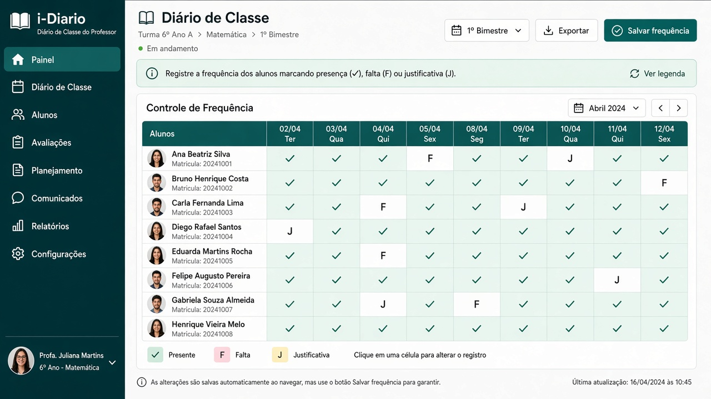

Dado espalhado
Matrícula, frequência e histórico em lugares diferentes. Sem cadastro único, a SME não fecha indicador sem telefonar para a escola.
iEducar - Gestão Educacional em Rede · Software Público · GPL v2
Quando matrícula, frequência, vaga, Censo e transporte não conversam, a secretaria perde tempo e a gestão perde confiança. O iEducar organiza esse fluxo em software público: um cadastro, módulos sob demanda e um caminho claro de implantação — com espaço para integrações, customizações e importação dos dados que a rede já tem.
Desafio da rede
Sem um cadastro único, cada escola vira uma ilha: a SME consolida planilhas, o Censo vira força-tarefa e o gabinete decide com números que não batem. O iEducar existe para fechar esse ciclo — da origem do dado à decisão.
Matrícula, frequência e histórico em lugares diferentes. Sem cadastro único, a SME não fecha indicador sem telefonar para a escola.
Vagas e Educacenso viram mutirão de fim de prazo. Retrabalho atrasa resposta ao INEP e gera desgaste com famílias e gestão.
Sistema proprietário prende a rede. Trocar prestador vira risco de perder histórico — software público mantém o dado com o município.
Pacote da secretaria
Comece pelo que sustenta a rede — o iEducar — acrescente o i-Diário quando a sala precisar lançar na mesma base e escolha módulos conforme a prioridade da gestão, sem trocar o sistema a cada nova demanda.
Cadastro único, matrícula, servidores, documentos e Educacenso. É a base da solução: sem isso, módulo nenhum se sustenta.
Microssistema do professor na mesma base. Entra depois do núcleo para acabar com frequência e nota digitadas duas vezes.
Pré-matrícula, transporte, relatórios, identidade, biometria e analytics — na ordem que a gestão priorizar.
Além do pacote padrão
A rede raramente parte do zero. O ecossistema prevê conectar sistemas que já existem, adaptar regras locais e trazer bases legadas para o cadastro único — sem reinventar a matrícula a cada ano.
gov.br, biometria e catracas, Power BI, Moodle, APIs e pontes com sistemas municipais. O núcleo permanece; os canais se conectam.
Fluxos, menus, documentos e regras alinhados à rotina da secretaria — sem abandonar o Software Público nem o histórico da rede.
Educacenso (TXT do INEP), bases de sistemas anteriores e planilhas controladas — para entrar com o aluno já reconhecido pela rede.
Fluxo da rede
Cada etapa tem dono: quem lança, quem confere e quem decide. Da secretaria à sala, da família ao Censo, do transporte ao gabinete — o mesmo aluno, sem redigitar.
Escolas, turmas, alunos, servidores e matrículas em uma base só. É o ponto de partida de toda a gestão — e da implantação.
Chamada, notas e planejamento na sala. A secretaria lê o que já foi lançado — sem planilha paralela.
Fila e critérios públicos reduzem conflito na porta da escola e mostram à SME a demanda real de oferta.
O Censo aproveita o cadastro do ano. Importação e validação ajudam a corrigir pendência antes do envio ao INEP.
Rotas e boletins usam a matrícula oficial. Integrações e documentos customizados seguem o mesmo cadastro.
Painéis e SERVLITCYS cruzam a base local com Censo, FUNDEB e território — para priorizar com o mesmo critério da matrícula.
Destaque do fluxo
O i-Diário é o microssistema pedagógico ligado ao iEducar: a sala trabalha no seu ritmo, sem cadastro paralelo. Entra quando o núcleo da secretaria já está estável.
Ver tela do i-Diário
Capacitação da equipe
Pacote e fluxo definidos não bastam: a rede precisa saber operar. O Moodle sustenta capacitação híbrida — trilhas online por perfil, com encontros presenciais nos momentos de pico.

Provas para a reunião
Álbum na ordem da operação: secretaria, professor, família, Censo, transporte, documentos, indicadores e capacitação.
Material para a reunião
PDFs para pautar secretário, prefeito e equipe técnica — depois das telas, antes de fechar a implantação.
Apresentação gerencial do iEducar para secretaria e gestão — desafio, pacote e caminho de implantação.
Baixar PDFPassos de migração, importação, capacitação e operação inicial.
Baixar PDFDocumentação padrão adicional do ecossistema para apoio técnico.
Baixar PDFAmbientes para testar
Ambientes de demonstração para SME, escola e professor experimentarem o fluxo. Os links públicos ainda serão liberados — a estrutura de teste já está prevista na página.
Validar cadastro, matrícula e visão da secretaria.
demo.i-educar.example /login Abrir demonstraçãoValidar chamada e notas na mesma base.
diario.i-educar.example /login Abrir demonstraçãoValidar fila e experiência da família.
vagas.i-educar.example Abrir portalValidar trilhas de capacitação da equipe.
treino.i-educar.example Abrir ambienteValidar rotas e portal da família.
transporte.i-educar.example Abrir móduloValidar painéis para reunião de gestão.
analise.serventecassessoria.com.br Abrir analyticsCaminho para implantar
A implantação une governança do Software Público, ampliação por módulos e quem leva hospedagem, migração, integrações e suporte até a sua rede.
Conduz o core do iEducar, revisa contribuições e mantém o Software Público alinhado às redes. Esta página é independente e compatível com esse upstream.
Com o núcleo estável, a gestão escolhe o próximo passo: novos módulos, integrações (gov.br, biometria, BI), customizações locais e importação de dados (Educacenso e legado) — sem trocar o SGE.
Boletins e PDFs com QR Code.
Painéis da secretaria.
Rotas e portal da família.
Importação TXT do INEP.
Fila e critérios públicos.
OpenID Connect na entrada.
Biometria facial.
Suporte, monitoramento e MEC.
Indicadores e mapa Horizonte.
Módulos, integrações, importações, organização i-Educar no GitHub e canal de contato desta página.

Cooperativa de software livre: implantação, hospedagem soberana e suporte ao setor público, em cooperação com a Buriti.
Fechar a decisão
Do desafio à operação: confira as provas, feche o escopo (incluindo integrações e importações necessárias), nomeie quem responde na SME e fale com a cooperação Buriti · LibreCode.